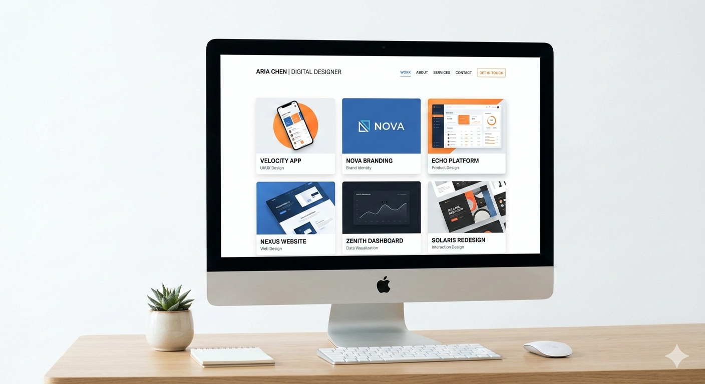
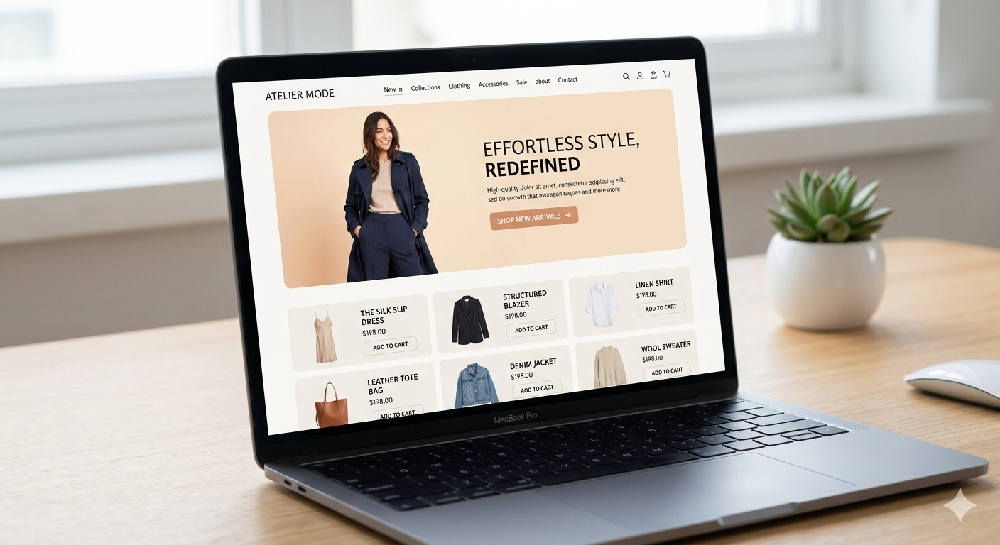
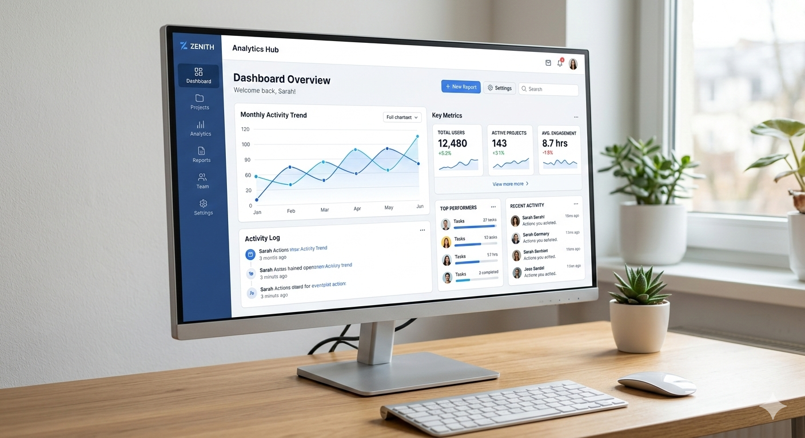
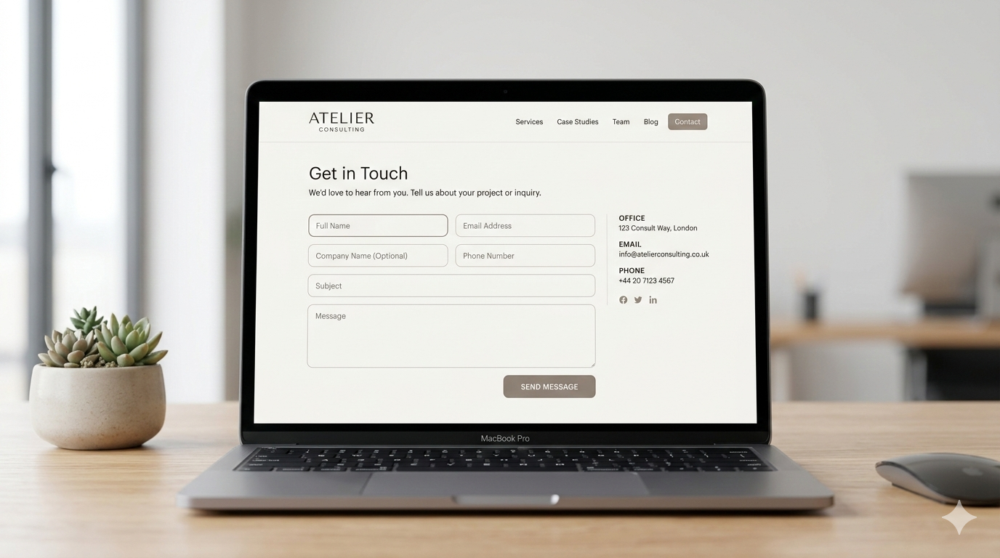

Modern Portfolio Website
A responsive and performance-focused portfolio website built to showcase projects in a clean and professional layout.
Project Overview
Introduction
This project is a personal portfolio website designed to professionally present my skills, projects, and development journey. The main focus was to create a clean user interface with a structured layout and smooth navigation.
Project Objective
The objective of this project was to build a scalable and maintainable front-end structure while improving my understanding of layout systems, component reusability, and responsive design principles.
Target Audience
The target audience includes recruiters, potential clients, and other developers who want to evaluate my technical skills and project experience.
Problem Statement
Many beginner portfolios lack structure and professional documentation. The challenge was to design a portfolio that not only looks good but also clearly communicates the development process and problem-solving ability.
Design & Planning
Design Approach
The design approach focused on minimalism, clarity, and consistency. I prioritized readability, spacing, and visual hierarchy to ensure the content remains easy to scan.
Wireframing / Layout Strategy
Before development, I planned the layout sections including Hero, Projects, Case Studies, and Contact. Each section was structured to maintain consistent spacing and alignment.
User Experience Considerations
Navigation simplicity, responsive behavior, and content clarity were the main UX priorities. The goal was to ensure smooth browsing across different screen sizes.
Tech Stack
Frontend Technologies
HTML5 was used for semantic structure, and CSS3 was used for styling and layout control.
Styling Approach
CSS Flexbox and basic responsive techniques were applied to create a flexible layout that adapts to different devices.
Tools & Resources Used
Visual Studio Code was used as the primary code editor, and GitHub was utilized for version control and collaboration.
Development Process
Implementation Strategy
The project was developed section by section to maintain clarity and avoid complexity. Reusable layout patterns were followed wherever possible.
Component Structure
Although built using static HTML, the structure was designed with modular thinking in mind so it can easily transition to a component-based framework in the future.
Code Organization Method
The codebase was organized into separate files for structure and styling to ensure maintainability and scalability.
Challenges & Solutions
Major Challenges
Maintaining consistent layout alignment and responsive behavior across multiple sections was challenging.
Problem-Solving Approaches
I used layout debugging tools and incremental testing to isolate issues and fix them without affecting other parts of the design.
Optimization Techniques
Unnecessary CSS was removed, and spacing consistency was improved to enhance readability and reduce file complexity.
Results & Impact
Project Outcome
The final result is a clean, structured, and responsive portfolio website that clearly presents projects and development capability.
Performance Improvements
The project structure was optimized for faster loading and better content organization.
Key Learnings
This project strengthened my understanding of layout structure, scalability planning, and clean documentation practices.
Gallery




Future Improvements
In the future, this project can be upgraded using JavaScript for dynamic content rendering or converted into a component-based framework like React.